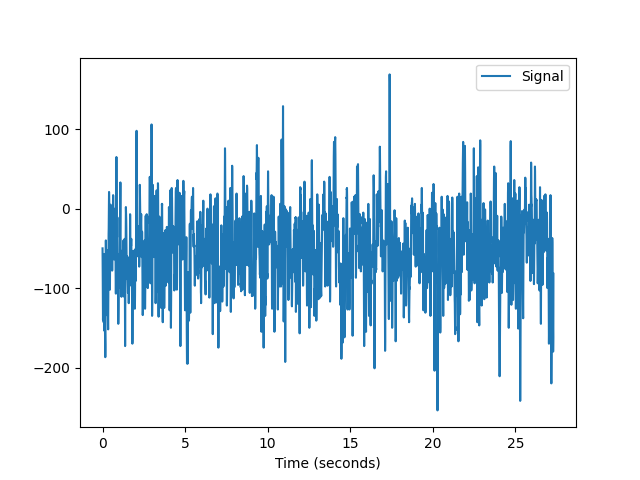
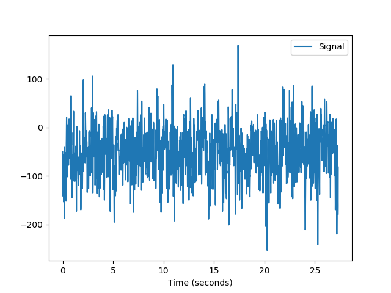
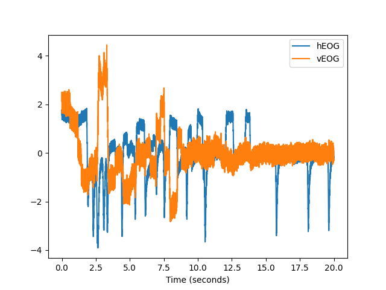
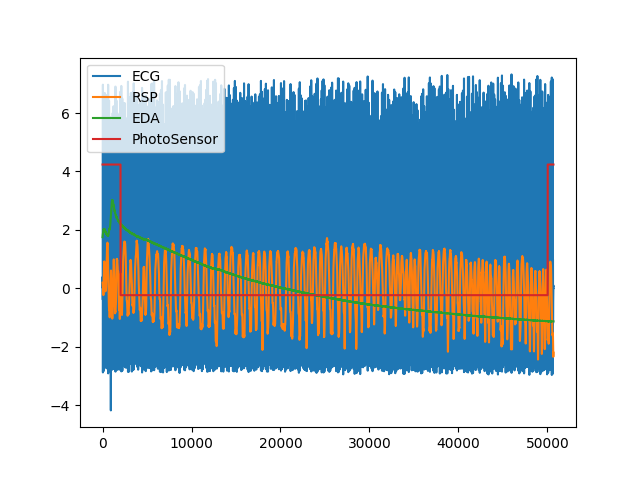
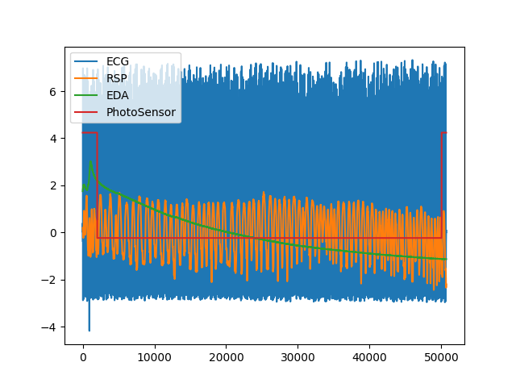

Data#
Datasets#
data()#
- data(dataset='bio_eventrelated_100hz')[source]#
NeuroKit Datasets
NeuroKit includes datasets that can be used for testing. These datasets are not downloaded automatically with the package (to avoid increasing its weight), but can be downloaded via the
nk.data()function (note that an internet connection is necessary). See the examples below.Signals: The following signals (that will return an array) are available:
ecg_1000hz: Returns a vector containing ECG signal (
sampling_rate=1000).ecg_3000hz: Returns a vector containing ECG signal (
sampling_rate=3000).rsp_1000hz: Returns a vector containing RSP signal (
sampling_rate=1000).eeg_150hz: Returns a vector containing EEG signal (
sampling_rate=150).eog_100hz: Returns a vector containing vEOG signal (
sampling_rate=100).
DataFrames: The following datasets (that will return a
pd.DataFrame) are available:iris: Convenient access to the Iris dataset in a DataFrame, exactly how it is in R.
eogs_200hz: Returns a DataFrame with
hEOG,vEOG.Single subject
Visual and horizontal electrooculagraphy
sampling_rate=200
bio_resting_5min_100hz: Returns a DataFrame with
ECG,PPG,RSP.Single subject
Resting-state of 5 min (pre-cropped, with some ECG noise towards the end)
sampling_rate=100
bio_resting_8min_100hz: Returns a DataFrame with
ECG,RSP,EDA,PhotoSensor.Single subject
Resting-state of 8 min when the photosensor is low (need to crop the data)
sampling_rate=100
bio_resting_8min_200hz: Returns a dictionary with four subjects (
S01,S02,S03,S04).Resting-state recordings
8 min (
sampling_rate=200)Each subject is DataFrame with
ECG,RSP`, ``PhotoSensor,Participant
bio_eventrelated_100hz: Returns a DataFrame with
ECG,EDA,Photosensor,RSP.Single subject
Event-related recording of a participant watching 4 images for 3 seconds (the condition order was:
["Negative", "Neutral", "Neutral", "Negative"])sampling_rate=100
eeg_1min_200hz: Returns an MNE raw object containing 1 min of EEG data (from the MNE-sample dataset).
- Parameters:
dataset (str) – The name of the dataset.
- Returns:
DataFrame – The data.
Examples
Single signals and vectors
In [1]: import neurokit2 as nk In [2]: ecg = nk.data(dataset="ecg_1000hz") In [3]: nk.signal_plot(ecg[0:10000], sampling_rate=1000)

In [4]: rsp = nk.data(dataset="rsp_1000hz") In [5]: nk.signal_plot(rsp[0:20000], sampling_rate=1000)
 
In [6]: eeg = nk.data("eeg_150hz") In [7]: nk.signal_plot(eeg, sampling_rate=150)
In [8]: eog = nk.data("eog_100hz") In [9]: nk.signal_plot(eog[0:2000], sampling_rate=100)

DataFrames
In [10]: data = nk.data("iris") In [11]: data.head() Out[11]: Sepal.Length Sepal.Width Petal.Length Petal.Width Species 0 5.1 3.5 1.4 0.2 setosa 1 4.9 3.0 1.4 0.2 setosa 2 4.7 3.2 1.3 0.2 setosa 3 4.6 3.1 1.5 0.2 setosa 4 5.0 3.6 1.4 0.2 setosa
In [12]: data = nk.data(dataset="eogs_200hz") In [13]: nk.signal_plot(data[0:4000], standardize=True, sampling_rate=200)
In [14]: data = nk.data(dataset="bio_resting_5min_100hz") In [15]: nk.standardize(data).plot() Out[15]: <Axes: >
 
In [16]: data = nk.data(dataset="bio_resting_8min_100hz") In [17]: nk.standardize(data).plot() Out[17]: <Axes: >
In [18]: data = nk.data("bio_resting_8min_200hz") In [19]: data.keys() Out[19]: dict_keys(['S01', 'S02', 'S03', 'S04']) In [20]: data["S01"].head() Out[20]: ECG RSP PhotoSensor Participant 0 2.394536e-19 5.010681 5.0 S01 1 1.281743e-02 5.011291 5.0 S01 2 1.129138e-02 5.010376 5.0 S01 3 7.629118e-04 5.010681 5.0 S01 4 -4.119742e-03 5.010986 5.0 S01
In [21]: data = nk.data("bio_eventrelated_100hz") In [22]: nk.standardize(data).plot() Out[22]: <Axes: >

In [23]: raw = nk.data("eeg_1min_200hz") In [24]: nk.signal_plot(raw.get_data()[0:3, 0:2000], sampling_rate=200)
{kind=link}
{kind=link}
{kind=link}
{kind=link}
I/O#
read_acqknowledge()#
- read_acqknowledge(filename, sampling_rate='max', resample_method='interpolation', impute_missing=True)[source]#
Read and format a BIOPAC’s AcqKnowledge file into a pandas’ dataframe
The function outputs both the dataframe and the sampling rate (retrieved from the AcqKnowledge file).
- Parameters:
filename (str) – Filename (with or without the extension) of a BIOPAC’s AcqKnowledge file (e.g.,
"data.acq").sampling_rate (int) – Sampling rate (in Hz, i.e., samples/second). Since an AcqKnowledge file can contain signals recorded at different rates, harmonization is necessary in order to convert it to a DataFrame. Thus, if sampling_rate is set to
max(default), will keep the maximum recorded sampling rate and upsample the channels with lower rate if necessary (using thesignal_resample()function). If the sampling rate is set to a given value, will resample the signals to the desired value. Note that the value of the sampling rate is outputted along with the data.resample_method (str) – Method of resampling (see
signal_resample()).impute_missing (bool) – Sometimes, due to connections issues, there are lapses in the recorded signal (short periods without signal). If
impute_missingisTrue, will automatically fill the signal interruptions using padding.
- Returns:
df (DataFrame) – The AcqKnowledge file as a pandas dataframe.
sampling rate (int) – The sampling rate at which the data is sampled.
See also
Example
In [1]: import neurokit2 as nk # data, sampling_rate = nk.read_acqknowledge('file.acq')
read_bitalino()#
- read_bitalino(filename)[source]#
Read an OpenSignals file (from BITalino)
Reads and loads a BITalino file into a Pandas DataFrame. The function outputs both the dataframe and the information (such as the sampling rate) retrieved from the OpenSignals file.
- Parameters:
filename (str) – Path (with or without the extension) of an OpenSignals file (e.g.,
"data.txt").- Returns:
df (DataFrame, dict) – The BITalino file as a pandas dataframe if one device was read, or a dictionary of pandas dataframes (one dataframe per device) if multiple devices are read.
info (dict) – The metadata information containing the sensors, corresponding channel names, sampling rate, and the events annotation timings if
events_annotationisTrue.
See also
Examples
In [1]: import neurokit2 as nk # data, info = nk.read_bitalino("data.txt") # sampling_rate = info["sampling_rate"]
read_video()#
- read_video(filename='video.mp4')[source]#
Reads a video file into an array
Reads a video file (e.g., .mp4) into a numpy array of shape. This function requires OpenCV to be installed via the
opencv-pythonpackage.- Parameters:
filename (str) – The path of a video file.
- Returns:
array – numpy array of shape (frame, RGB-channel, height, width).
int – Sampling rate in frames per second.
Examples
In [1]: import neurokit2 as nk # video, sampling_rate = nk.read_video("video.mp4")
write_csv()#
- write_csv(data, filename, parts=None, **kwargs)[source]#
Write data to multiple csv files
Split the data into multiple CSV files. You can then re-create them as follows:
- Parameters:
data (list) – List of dictionaries.
filename (str) – Name of the CSV file (without the extension).
parts (int) – Number of parts to split the data into.
- Returns:
None
Example
Save big file in parts
In [1]: import pandas as pd In [2]: import neurokit2 as nk # Split data into multiple files # nk.write_csv(data, 'C:/Users/.../data', parts=6)
Read the files back
# Iterate through 6-parts and concatenate the pieces # data_all = pd.concat( # [pd.read_csv(f"data_part{i}.csv") for i in range(1, 7)], # axis=0, # )
Other#
Submodule for NeuroKit.
- download_from_url(url, destination_path=None)[source]#
Download Files from URLs
Download a file from the given URL and save it to the destination path.
- Parameters:
url (str) – The URL of the file to download.
destination_path (str, Path) – The path to which the file will be downloaded. If None, the file name will be taken from the last part of the URL path and downloaded to the current working directory.
- Returns:
bool – True if the file was downloaded successfully, False otherwise.
- download_zip(url, destination_path=None, unzip=True)[source]#
Download ZIP files
Download a ZIP file from a URL and extract it to a destination directory.
- Parameters:
url (str) – The URL of the ZIP file to download.
destination_path (str, Path) – The path to which the ZIP file will be extracted. If None, the folder name will be taken from the last part of the URL path and downloaded to the current working directory.
unzip (bool) – Whether to unzip the file or not. Defaults to True.
- Returns:
bool – True if the ZIP file was downloaded successfully, False otherwise.
- read_xdf(filename, upsample=2, fillmissing=None)[source]#
Read and tidy an XDF file
Reads and tidies an XDF file with multiple streams into a Pandas DataFrame. The function outputs both the dataframe and the information (such as the sampling rate).
Note that, as XDF can store streams with different sampling rates and different time stamps, the function will resample all streams to 2 times (default) the highest sampling rate (to minimize aliasing). The final sampling rate can be found in the
infodictionary.Note
This function requires the pyxdf module to be installed. You can install it with
pip install pyxdf.- Parameters:
filename (str) – Path (with the extension) of an XDF file (e.g.,
"data.xdf").upsample (float) – Factor by which to upsample the data. Default is 2, which means that the data will be resampled to 2 times the highest sampling rate. You can increase that to further reduce edge-distortion, especially for high frequency signals like EEG.
fillmissing (float) – The maximum duration in seconds of missing data to fill.
None(default) will interpolate all missing values and prevent issues with NaNs. However, it might be important to keep the missing intervals (e.g.,fillmissing=1to keep interruptions of more than 1 s) typically corresponding to signal loss or streaming interruptions and exclude them from further analysis.
- Returns:
df (DataFrame, dict) – The BITalino file as a pandas dataframe if one device was read, or a dictionary of pandas dataframes (one dataframe per device) if multiple devices are read.
info (dict) – The metadata information containing the sampling rate(s).
See also
Examples
In [1]: import neurokit2 as nk # data, info = nk.read_xdf("data.xdf") # sampling_rate = info["sampling_rate"]